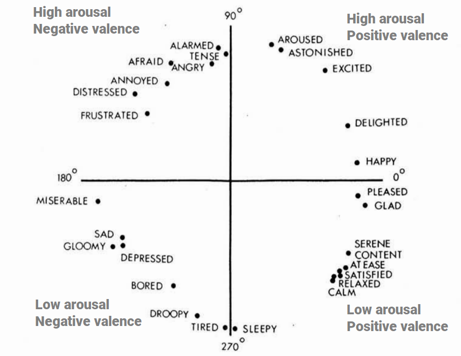
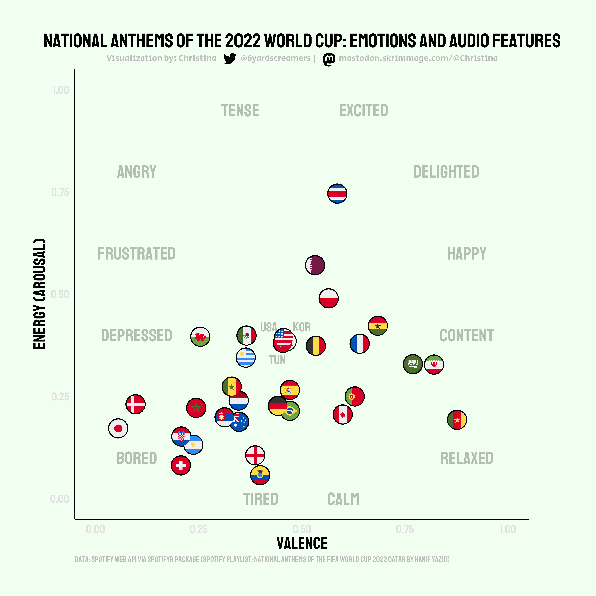

Outbursts of emotions in football are common and can be observed by watching players, managers, supporters, and even referees. The emotions revealed at tournaments such as the FIFA World Cup are visible in many situations. On this international stage, the playing of national anthems prior to kick-off frequently evokes strong expressions of emotions and, for some, may represent a unique affect driven experience.
LA EMOCIÓN DE ALEXIS VEGA EN SU PRIMER MUNDIAL 🇲🇽 ❤#Qatar2022 #FIFAWorldCup pic.twitter.com/FJh64baa8h
— ESPN.com.mx ((ESPNmx?)) November 22, 2022
The circumplex model of emotion developed by James Russell (Russell 1980) is a commonly cited framework for defining dimensions of affective states (Remington, Fabrigar, and Visser 2000).1 This model suggests that emotional states are processed and represented along the two dimensions of valence (horizontal axis) and arousal/activity (vertical axis) (Scott, Sauter, and McGettigan 2010) (Figure 1).

Research investigating the interaction of emotions and music is vast (Juslin 2013). Many models have been proposed (Eerola and Vuoskoski 2010) and interest in the study of emotions and music recommendation systems is growing (Schedl et al. 2018). Measures similar to Russell’s dimensions are found in Spotify’s track audio features 2. Spotify defines their valence and energy (a proxy for arousal) measures as:
Using the Spotifyr package (Thompson et al. 2021), Spotify audio features of valence and energy for the 32 national anthems of the participating countries at the 2022 FIFA Men’s World Cup were plotted via ggplot2 (Wickham 2016). This descriptive analysis is not without limitations. For example, results can vary depending on each artists’ interpretation of the song. That being said, the current analysis’ results are shown in Figure 2 below. Does Wales’ anthem strike a miserable nerve? Can we explain England’s bore draw tendencies via their low energy score? Conversely, did Costa Rica concede seven to Spain because their anthem is too energetic? To be clear, I don’t actually believe any of this relates to performance on the pitch, these are just some of my silly thoughts.

Can’t stop thinking about this woman during the Welsh National Anthem at the World Cup. Go on luv ! pic.twitter.com/VpYn1N4n5C
— Cam All Ye Faithful 🎄 ((camruined?)) November 21, 2022
Costa Rica’s fans were brilliant and their players belted out the anthem with such passion but it seemed to take all of their intensity out of them. Spain could have won that game wearing slippers #ESPCRC (talkSPORT?) #TSWorldCup pic.twitter.com/6AGtiGP7Dj
— Nigel Adderley ((nadderley?)) November 23, 2022